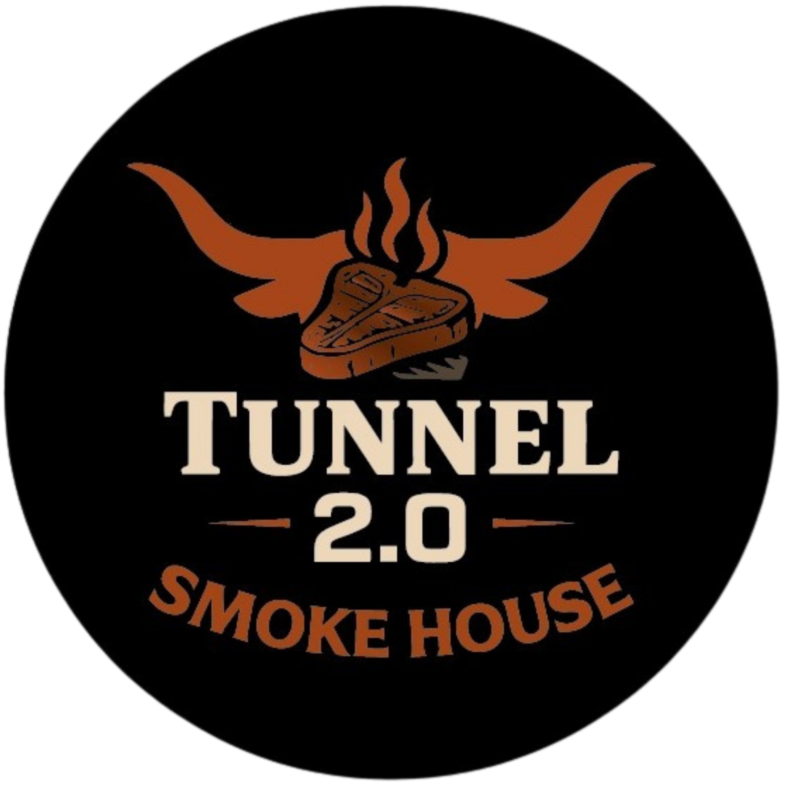
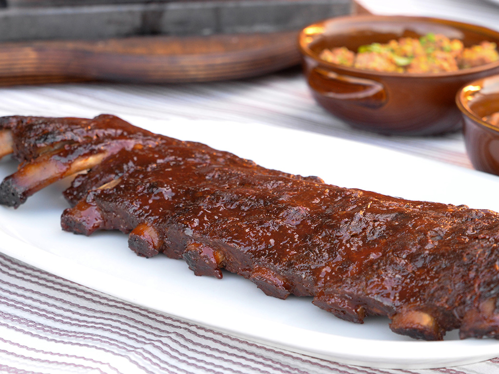
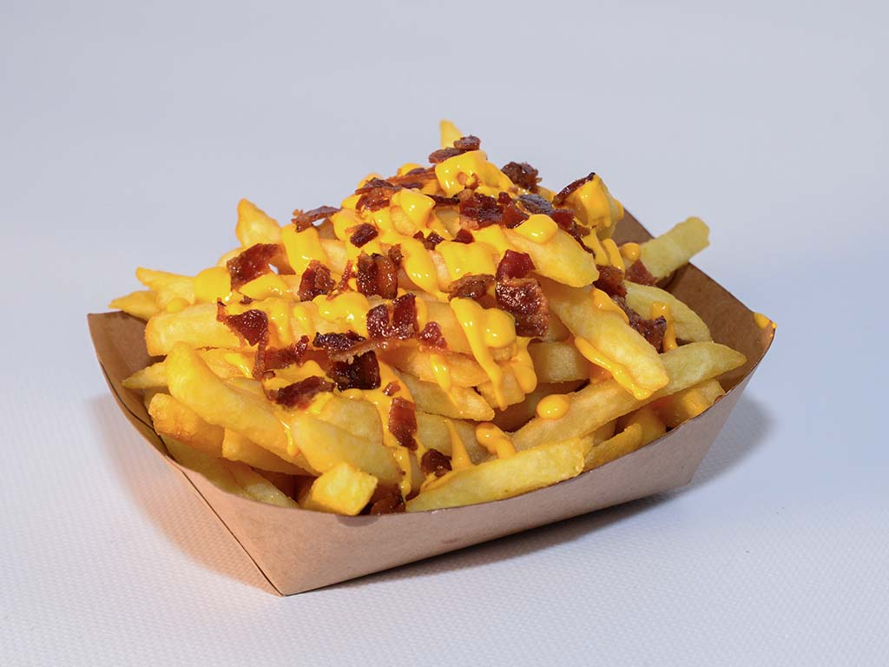

Best seller smokehouse
15EUR
Baby Back Ribs
Costine affumicate con ciliegio. Sono immediate, sceniche e raccontano subito il locale.
Smokehouse / Frollatore / Burger

Cotture lente, carne scelta e piatti da condividere. Parti dalle scelte consigliate oppure vai dritto alla categoria.
Apri la carta ↓Tunnel 2.0 / Policoro
Il menu e diviso per esperienza: specialita da spingere, BBQ, frollatore, burger, tavolate e contorni.



Chiedere sempre conferma al personale prima di ordinare.
Tagli e disponibilita possono cambiare in base alla serata.